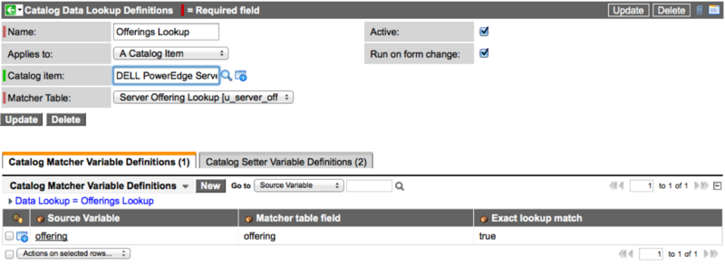
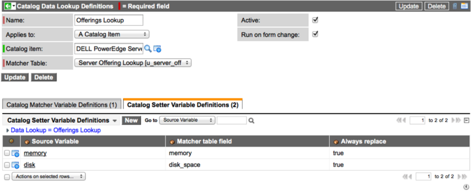

Service Catalog Data Lookup
| |
Note: This article applies to Fuji and earlier releases. For more current information, see Service Catalog Categories at http://docs.servicenow.com
The ServiceNow Wiki is no longer being updated. Visit http://docs.servicenow.com for the latest product documentation. |
Contents
- 1 Overview
- 2 Activating the Plugin
- 3 Roles
- 4 Creating Custom Catalog Data Lookups
- 5 Troubleshooting
1 Overview
The Data Lookup and Record Matching Support for Service Catalog plugin offers similar features to the general Data Lookup and Record Matching Support plugin. Use the plugin for service catalog to perform data lookups for variables on service catalog item screens, on requested items, and on catalog tasks as a user fills out the values contained in variables.
Administrators and users with the catalog_lookup_admin and catalog_lookup_manager roles can create and use service catalog data lookups.
2 Activating the Plugin
This plugin is automatically active on new instances. For older instances, you may need to manually activate the Data Lookup and Record Matching Support for Service Catalog plugin. Activating the plugin also activates the Data Lookup and Record Matching Support plugin. For information about the Data Lookup and Record Matching Support plugin and implications for existing priority lookup rules when activating, see Data Lookup and Record Matching Support
| Click the plus to expand instructions for activating a plugin. |
|---|
|
If you have the admin role, use the following steps to activate the plugin.
|
3 Roles
The following roles participate in the process of creating and using service catalog data lookups:
| Role | Description |
|---|---|
| catalog_lookup_admin | Similar to data_lookup_admin. Can create, update, and delete catalog data lookup definitions, matcher variable definitions, and setter variable definitions. |
| catalog_lookup_manager | Can read catalog data lookup definitions, matcher variable definitions, and setter variable definitions. The role can be granted to anyone using catalog data lookups so they can see the definitions for which they are creating rules. As required, grant create, read, write, or delete access to the individual data lookup rules tables created to delegate maintenance. |
4 Creating Custom Catalog Data Lookups
Creating a new catalog data lookup is similar to creating a normal, custom data lookup except when creating the catalog data lookup definition record.
- Create a custom data lookup table. It must extend the Data Lookup Matcher Rules [dl_matcher] table.
- Add data lookup values to the data lookup table.
- Create a catalog data lookup definition record.
- (Optional) Create a data lookup module.
4.1 Step 1. Create a Custom Data Lookup Table
Create a custom table to store lookup data. The custom table must extend the Data Lookup Matcher Rules [dl_matcher] table.
For example, you can create a Server Offering Lookups table to store information about matcher offerings (bronze, silver, and gold) and associated setter values (memory and disk space) for each matcher offering.
4.2 Step 2. Add Data Lookup Values to the Data Lookup Table
The columns of a data lookup table contain both matcher and setter field data. Each data lookup is a query that searches for a row containing values that match the matcher fields. The data lookup then returns the value listed in the setter fields.
For example, you can define the matching settings for bronze, silver, and gold offerings as described previously.
To add values to the lookup table:
- In the navigation filter, enter the name of the new custom lookup table.
- Configure the list and create appropriate fields for the lookup table.
- From the table list, click New and enter appropriate matcher and setter field values. For example:
{kind=link}
| |
Note: Each row in a data lookup table must be unique. |
4.3 Step 3. Create a Catalog Data Lookup Definition Record
| |
Note: The Run on Insert and Run on Update options are not supported for catalog data lookups. Other options operate the same as for normal data lookup. |
To create a catalog data lookup definition record:
- Navigate to System Policy > Rules > Data Lookup Definitions.
- Click New.
- Select Catalog Data Lookup Rule.
- Enter a Name.
- In Applies to, select catalog item or variable set.
- In Catalog item/Variable set, select a specific item or set.
- Select a Matcher Table.
- Select other options, as required.
- Right-click the form header and click Save.
- From the Catalog Matcher Variable Definitions related list, click New.
- In Source Variable name, select the variable name of the item or variable set that contains the values to be matched.
- In Matcher table field, select the field from the matcher table that contains the value to be matched.
- Fill in the other fields, as appropriate.
- For example:
- 
- Click Submit.
- From the Catalog Setter Variable Definitions related list, click New.
- In Source Variable name, select the variable name for the item or variable set to be updated.
- In Matcher table field, select the field from the matcher table that contains the value to be set.
- Fill in the other fields, as appropriate.
- Click Submit.
- Click Update.
- For example:
- 
{kind=link}
{kind=link}
4.3.1 Catalog Data Lookup Definitions Fields
| Field | Description | ||
|---|---|---|---|
| Name | Enter a unique name to identify the definition record. | ||
| Applies to | Select what the data lookup rule should apply to: a catalog item or a variable set. | ||
| Catalog item/Variable Set | Select the catalog item or variable set to which the data lookup rule should apply. | ||
| Matcher Table | Select the table containing the lookup values. This table normally begins with a u_ prefix.
| ||
| Active | Select this check box to run this catalog data lookup rule. Clear the check box to ignore this catalog data lookup rule. | ||
| Run on form change | Select this check box to automatically look up values whenever a user changes a variable value on a catalog item or form. This is the only supported method for catalog data lookup rules.
Note: This does not include changes automatically made by other data lookup rules, such as the priority lookup rules. |
4.3.2 Matcher Variable Definition Fields
The matcher variable definitions determine when a data lookup occurs. A data lookup only occurs on a variable with matcher variable definitions. The data lookup uses the values of the source variable to look up one or more values from the matcher table.
| Field | Description |
|---|---|
| Data Lookup | Displays the name of the parent data lookup definitions record. |
| Source variable name | Select the variable from the source item or variable set that contains the data to match. |
| Matcher table field | Select the field from the matcher table that contains the data to match. |
| Exact lookup match | Select this check box to require the matcher table to contain a matching row for every possible combination of values (including blank values). Clearing this check box means that any blank values in the matcher table match any value. For example, suppose the Offering field is blank in the matcher table. When this check box is selected, there is a match only when the value in the source table row is blank. When this check box is cleared, the blank matcher field value matches any value in the source table field.
Note: If the lookup does not require an exact match, matcher table rows containing blank values are treated as wild cards, matching all values. |
4.3.3 Setter Variable Definition Fields
The setter fields determine what variable the data lookup changes when the matching conditions are true.
| Field | Description |
|---|---|
| Data Lookup | Displays the name of the parent data lookup definitions record. |
| Source variable field | Select the variable from the source item or variable set that the data lookup updates. |
| Matcher table field | Select the field from the matcher table that provides the new value for the update. |
| Always replace | Select this check box to replace any existing value with a value from the data lookup. Clear this check box to ignore the update if the field has an existing value. |
4.4 Step 4. Create a Data Lookup Module
Optionally, you can create a new module for the data lookup table you created in Step 1. Creating a new module enables you to customize the application navigator and organize information by user role. The module should have these properties:
| Property | Required Value |
|---|---|
| Table | Select the data lookup table you created in Step 1. For example u_server_offerings_lookup. |
| Link type | List of Records |
5 Troubleshooting
If the custom data lookup definition rules are not behaving as expected, check for the following conditions.
- Ensure that the matcher variable is not read-only. Since users cannot change read-only variables, there cannot be an on form change event for read-only variables.
- Ensure that the data in the matcher table is correct.
- If the lookup requires an exact match, verify that there is a matcher table row for each possible combination (including blank values). The lookup fails if cannot find a matching value.
- If the variable is an option or check box, it always has a value, so you must select Always replace.
- Verify that you have not created a recursive rule, such as:
- If Variable A = 1, then Variable B =2. If Variable B = 2, then Variable A = 2.